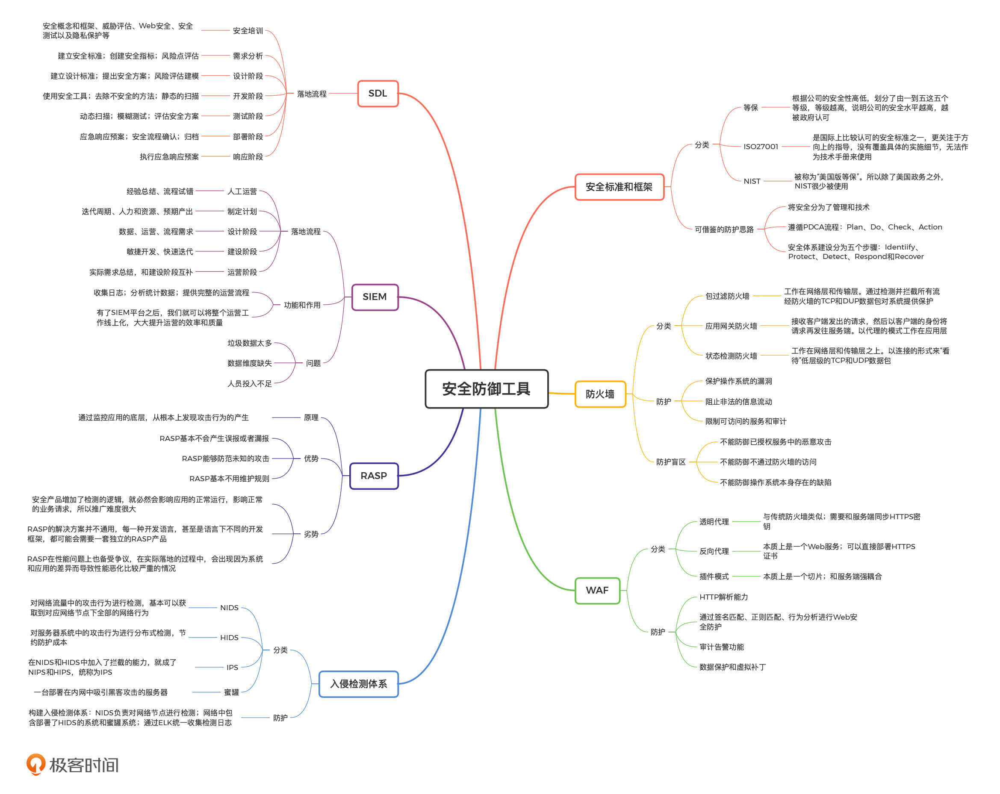

- 00 开篇词 别说你没被安全困扰过.md
- 01 安全的本质：数据被窃取后，你能意识到问题来源吗？.md
- 02 安全原则：我们应该如何上手解决安全问题？.md
- 03 密码学基础：如何让你的密码变得“不可见”？.md
- 04 身份认证：除了账号密码，我们还能怎么做身份认证？.md
- 05 访问控制：如何选取一个合适的数据保护方案？.md
- 06 XSS：当你“被发送”了一条微博时，到底发生了什么？.md
- 07 SQL注入：明明设置了强密码，为什么还会被别人登录？.md
- 08 CSRF_SSRF：为什么避免了XSS，还是“被发送”了一条微博？.md
- 09 反序列化漏洞：使用了编译型语言，为什么还是会被注入？.md
- 10 信息泄露：为什么黑客会知道你的代码逻辑？.md
- 11 插件漏洞：我的代码看起来很安全，为什么还会出现漏洞？.md
- 13 Linux系统安全：多人共用服务器，如何防止别人干“坏事”？.md
- 14 网络安全：和别人共用Wi-Fi时，你的信息会被窃取吗？.md
- 15 Docker安全：在虚拟的环境中，就不用考虑安全了吗？.md
- 16 数据库安全：数据库中的数据是如何被黑客拖取的？.md
- 17 分布式安全：上百个分布式节点，不会出现“内奸”吗？.md
- 18 安全标准和框架：怎样依“葫芦”画出好“瓢”？.md
- 19 防火墙：如何和黑客“划清界限”？.md
- 20 WAF：如何为漏洞百出的Web应用保驾护航？.md
- 21 IDS：当黑客绕过了防火墙，你该如何发现？.md
- 22 RASP：写规则写得烦了？尝试一下更底层的IDS.md
- 23 SIEM：一个人管理好几个安全工具，如何高效运营？.md
- 24 SDL：怎样才能写出更“安全”的代码？.md
- 25 业务安全体系：对比基础安全，业务安全有哪些不同？.md
- 26 产品安全方案：如何降低业务对黑灰产的诱惑？.md
- 27 风控系统：如何从海量业务数据中，挖掘黑灰产？.md
- 28 机器学习：如何教会机器识别黑灰产？.md
- 29 设备指纹：面对各种虚拟设备，如何进行对抗？.md
- 30 安全运营：“黑灰产”打了又来，如何正确处置？.md
- 加餐1 数据安全：如何防止内部员工泄露商业机密？.md
- 加餐2 前端安全：如何打造一个可信的前端环境？.md
- 加餐3 职业发展：应聘安全工程师，我需要注意什么？.md
- 加餐4 个人成长：学习安全，哪些资源我必须要知道？.md
- 加餐5 安全新技术：IoT、IPv6、区块链中的安全新问题.md
- 模块串讲（一）Web安全：如何评估用户数据和资产数据面临的威胁？.md
- 模块串讲（三）安全防御工具：如何选择和规划公司的安全防御体系？.md
- 模块串讲（二）Linux系统和应用安全：如何大范围提高平台安全性？.md
- 结束语 在与黑客的战役中，我们都是盟友！.md
模块串讲（三）安全防御工具：如何选择和规划公司的安全防御体系？
你好，我是何为舟。“安全防御工具”模块讲完了，今天，我还是通过一篇串讲，带你复习巩固这一模块的内容。
在这个模块中，我们重点讲解了常见的安全防御工具和手段。这些工具和手段包括：安全标准和框架、防火墙、WAF、IDS、RASP、SIEM和SDL等。它们分别从不同的方面，为公司提供了防御攻击和发现漏洞的能力，也是公司安全防御体系的重要组成部分。
既然这些工具和手段已经这么成熟了，是不是直接使用它们在公司的环境中“跑一跑”就万事大吉了呢？据我了解，确实有部分公司是这么做的，而且这么做下来之后，还能够通过等保测评。
但是，这种做法并不可取。因为安全防御工具只是工具，最终好不好用，还是取决于人。只有对安全工具进行合理的选择和规划，我们才能搭建出最符合公司实际情况的防御体系。
接下来，我就结合几个典型的安全场景来和你聊一聊，在不同安全场景下，我们应该如何做好公司的安全防御体系。
场景一：公司发展初期，没有真实的攻击发生
我们先来看第一个安全场景：公司刚刚成立，业务还在发展初期。这时，黑客还没有注意到业务的存在，没有真实的攻击发生。
这种情况下，如果公司领导仍然有安全意识，愿意投入一定精力去发展安全，那在这样的公司做安全就十分幸运了。
在这个场景中，安全的发展有五个明显的优势。
- 业务体量小：业务在发展初期，不论是功能逻辑、代码量还是服务器环境都不复杂。这时，开展威胁评估工作十分简单。同时，由于对外的入口少，安全防御也很容易做到全面覆盖。
- 用户量少：我们在使用业务的用户还比较少的时候，做出安全改动，那公司要考虑的用户影响也比较小。这个时候，我们推动安全工作面临的阻力也就小很多。
- 开发人员少：业务初期可能只有不超过十个人的开发团队。在这样一个小的团队中，我们可以通过深度沟通的方式，来推动安全培训和安全制度的落地。
- 领导支持：业务初期就考虑安全，也反映了领导对安全的认可和重视。从一开始就是自上而下进行安全发展，也就更容易为安全争取到各类资源投入。
- 安全需求不急迫：业务知名度不高，还没有黑客注意，所以严格来说，是不存在真实的安全威胁的。我们完全可以按部就班，从基础开始一步步搭建安全防御体系。
在这样不紧迫且有足够推动力的情况下，安全建设的最优方案，一定是从基础开始做起。那么，安全的基础工作是什么呢？
我认为是安全制度。因为一切安全问题的根源其实都是人。比如，由于员工缺乏安全意识导致的安全漏洞，懒惰疏忽导致的安全误操作等。所以，安全建设的第一步，是通过规章制度规范化人的操作行为，避免安全漏洞的产生。
对于开发工作来说，SDL就是一个不错的参考。先进行深度的安全培训，然后在开发的各个环节中嵌入安全需求和工作，最终保持安全监控和应急响应；对于管理工作来说，等保中的5类安全管理内容，ISO27001中的安全策略、安全组织等，都是非常值得借鉴的。我们可以从这些标准中选取合适的细则（如安全机构的组成和职责等），来组成自身的安全管理制度。
另一方面，因为人员较少且领导支持，所以落地安全制度也相对容易。我们可以在落实安全制度的过程中，根据需求引用各种安全防御工具。比如：在安全制度中，如果要求对网络和设备进行隔离，那我们就使用防火墙；如果要求有集中的安全管控，那我们就使用SIEM；如果对数据安全作要求，那我们就使用DLP等。
最终，随着公司的发展，安全制度也会随之调整，公司的安全防御体系，也会根据安全制度逐渐完善。
场景二：公司发展中后期，没有真实的攻击发生
接下来，我们要讨论第二个安全场景：公司经过一段时间的发展，业务已经逐渐成熟，并且积累了一定的用户量。这个时候，可能业务中数据的价值还不是很高，所以仍然没有受到黑客的攻击，或者，只有初级的黑客在练手，没有对公司造成真实的影响。
如果公司因为发展有了安全的合规需求（比如，公司想要上市、或者客户有安全考虑等），就要开始考虑投入资源发展安全了。
那么我们是否可以继续利用上一个场景中的方法，基于安全制度来建设安全防御体系呢？当然是不可以的。
事实上，这个场景中的安全条件和上一个场景完全相反：业务大、用户多、开发多、领导不完全支持和有紧迫的安全需求。所以，这些条件就成为了安全发展的阻力。也就是说，我们仍然可以制定安全制度，但是，安全制度还是会因为阻力过大而无法落地。
为了更好地落地安全制度，我们可以从可见收益最大的方向入手，表明安全工作的有效性，说服领导和同事支持安全的发展。那么，可见收益最大的安全工作有哪些呢？
一般来说，发现安全问题最直接的方法就是安全测试。没有安全介入和培训的开发工作，必然会存在各种安全漏洞。如果我们能通过加入安全测试环节，检测出这些安全漏洞，就非常有说服力了。
另一种发现安全问题的直接方法是安全演练。如果我们想要测试员工的安全意识，就可以发送内部钓鱼邮件；如果我们想要找出线上应用的缺陷，就可以发起一次安全渗透攻击；如果我们想要找出管理或运维上的不足，就可以模拟一次内鬼入侵事件。
这些演练的最终结果，往往会让领导意识到安全问题的严重性。这样一来，你再针对这些发现的问题，引用各种安全防御工具或者手段就顺利很多了。
除了安全测试和安全演练，满足合规需求是很多公司领导唯一关心的指标。在这种情况下，我们就必须依据法律法规开展安全工作了。比如说：
- 网络安全法要求网络和系统日志留存大于6个月
- 数据安全审查时要求对密码、隐私信息等关键数据进行分类、加密存储
- 为了通过等级保护的评测，引入各类安全防御工具
有了这些有规可依的强需求，我们推动公司投入资源进行对应的安全建设也就底气十足了。
这些可见收益最大的安全工作，可以让安全部门在公司站住脚，让安全得到公司领导的认可。但需要注意的是，它们还不足以实现一个成熟的公司安全防御体系。所以，当安全部门在公司立住脚跟之后，我们还是要根据具体的安全问题，逐渐完善公司的安全防御体系，以点带面推动公司的安全发展。
场景三：有真实攻击发生
最后，我们来看一个比较常见的安全场景：公司已经因为黑客的攻击，造成了重大的经济损失。这时，公司就不得已要开始投入资源，建设安全防御体系了。
在这个场景中，安全工作是以一种“救火”的状态开始的。一般来说，”救火“的过程是这样的：出现了黑客的攻击，安全人员去分析攻击路径，发现安全漏洞，采用最简单、直接的方式进行修复。比如说，在发现黑客是利用了某个应用的Web漏洞发起攻击之后，安全人员就会直接修复相应的漏洞。
持续救火对安全的发展没有任何帮助。因此，我们需要在“救火”的过程中，逐步升级我们的工具。
我们还是以Web攻击为例。最开始修复这个Web漏洞的时候，我们可能是直接找到对应的开发人员，告诉他们怎么修改。但我们很快意识到，可能还有很多Web漏洞没有被发现。为了快速填补大部分的Web漏洞，我们就需要考虑投入精力去做一个WAF了。
随着WAF的落地，针对Web的攻击大大减少，会转而出现更深层次的攻击。这个时候，我们可以考虑推广RASP，从更底层的地方拦截黑客的攻击。如果有合适的契机，我更建议你推广SDL，更进一步避免漏洞的产生。
总之，在这个场景中，最常见的安全防御体系的发展方式就是：先快再好。也就是先选择最容易部署落地的防御工具和手段（比如，防火墙、WAF和IDS等），快速填补完大规模的漏洞之后，再在已有的基础之上，逐步完善和深入，最终形成成熟的公司安全防御体系。
总结
在不同的安全场景下，想要做好安全防御体系，离不开合理地落地安全制度、使用安全防御工具和手段。
1.在最理想的情况下，我们应当以安全制度为基础规范人的行为，避免安全问题的出现。
2.在公司对安全需求不明确的时候，我们需要找出显著的安全问题，表现出安全工作能够产出的收益。
3.当有真实的攻击发生时，我们要先快速阻断攻击，再逐步深入、彻底解决安全问题。
另外，虽然每一个安全防御工具都有成熟的商业产品和使用模式，但在实际建设安全防御体系的时候，我们还是要根据公司的实际情况和领导需求，来选择和规划不同的安全防御工具。而能否设计出适合公司发展的安全体系，其实也是对每一位安全人员的最大考验。-

思考题
最后，我们还是来看一道思考题。
我们今天讲了三种典型的安全场景，你们公司属于哪种场景呢？你可以试着思考一下，如果让你来推动公司的安全发展，你首先要解决的问题是什么呢？
欢迎留言和我分享你的思考和疑惑，也欢迎你把文章分享给你的朋友。我们下一讲再见！
© 2019 - 2023 Liangliang Lee. Powered by gin and hexo-theme-book.